Return Plan¶
Nick Bollettieri¶
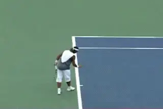
The return battle begins with rituals--and strategies.
[The battle between the server and the returner begins [long before the serve is ever hit.]] As the players take their positions, both players begin their rituals and plan their strategy. The server establishes his starting stance, usually bounces the ball several times, then takes one last look at the returner before sending the toss into the air.
Meanwhile, the returner readies himself with his own set of rituals--ready steps, swaying back and forth, or possibly taking steps forward and then backwards like the great Andre Agassi.
But I'm here to tell you, you need a lot more than rituals to develop a successful return game. We've looked at the right mental attitude. link We've looked at the fundamentals of technique. link Now let's look at the third part of developing a great return game: your return plan.
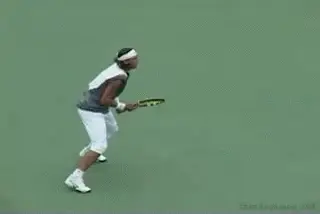
Is the return a forehand or a backhand?
The Need for the Plan
The fact is that you need a solid plan for your return before the start of each point. You need to know in advance what you intend to do on the return. This will eliminate split second decision-making, take some of the pressure off, and help you execute more consistently.
You can never be certain whether the serve will be to your forehand or backhand side. The best you can do is anticipate and sometimes influence the server's action. But you do have the opportunity before every point to decide exactly what you are going to do.
Great returners have many factors to consider as part of their pre-point routine.
-
[Will I block, chip or drive the return?]
-
[Is it a first or a second serve?]
-
[Do I anticipate the serve and volley?]
-
[What direction will I hit?]
-
[Will I stay back or attack?]
-
[Will I try to influence or pressure the serve selection?]
It may seem unrealistic to have this type of long mental checklist before every return, but with experience the right questions will begin to flow through your mind instinctively.
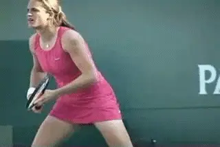
The return checklist becomes automatic.
Here's one example of how the check list can work in the mind of an experienced player. \"My opponent has been attacking the \"T\" with accurate placements and coming in nearly every first serve, so I better expect that to happen. The serve will likely be hard and flat so I'm prepared to chip the return down to his feet, straight back down the middle. This will force him to volley up and then give me the opportunity to pass him on the next ball.\"
That's one example. But let's take a closer look at all of the factors so you can start to see how they call come into play in planning your return strategy.
Block, Chip or Drive?
Will I block, chip or drive the return? When the serve has overwhelming power, block and chip returns are the most effective tools for your counter attack.
-
[Hitting flatter drive returns on the rise requires great timing.]
-
[Top spin drives take longer to execute but can be very effective in the right circumstances.]
You should decide what type of return you want to hit in advance of the serve. This is largely determined by factors we'll look at now.
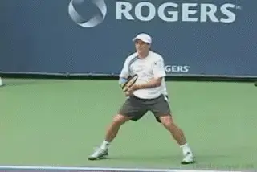
The type of serve in part dictates the type of return.
First or Second Serve?
Is it a first or second serve? That sounds like an obvious question, but too many players don't really consider it and miss the same returns in the same way.
In a first serve situation, typically, you'll see a lot of hard flat first serves. Most players look to block and chip against first serves rather than trying to drive the return. In these cases, you must prepare mentally by thinking defense.
You must adjust your return swings to become more like volleys than ground strokes, as we explained in the technique article link. Yes Andre Agassi often steps in and absolutely cleans these serves on the rise. That's an advanced strategy and there is one way to know if it is effective for you. Can you execute it consistently?
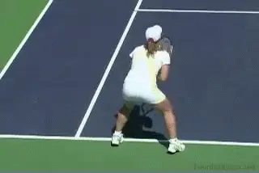
One second serve option: run around and attack.
In second serve situations, the pressure shifts from the returner to the server. Now the server has to make sure to get the ball in play. This allows you to become more aggressive with court position and shot selection.
When we talk about the return of the second serve, we have to have an objective in mind. As the returner, you can expect to see mostly spin serves that target your weaker return side. Take care not to give the point away by trying to do too much. You have to maintain your discipline to not over hit and make errors against weaker second balls.
But if the ball is sitting there and it's a defensive serve, I want you to challenge the ball. In this situation, trying to take the ball earlier makes more sense.
Another option is to attack the net off the return. [[Change your position; move forward; chip and charge.] [Or get around the ball the way so many top players now do and hit that inside-out forehand.]] This part comes back to attitude. When you get the chance, I want you to send a message to the server.
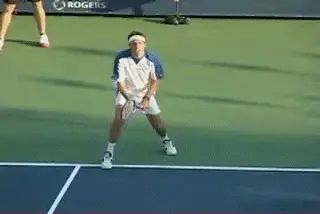
Another second serve option: chip and charge.
Serve and Volley?
Do I anticipate the serve and volley tactic? Especially on fast court surfaces, you'll find players like Max Mirnyi will often attack the net behind both the first and second serve.
Some players will serve and volley in streaks, usually until they lose a few points and the courage to attack. Other players will only serve and volley on key points when they want to apply pressure on the returner. There are also many players who will never serve and volley regardless of the circumstances. Which category applies to your opponent? If you know the server is likely to attack, then you won't be rattled when you see it.
Two Shot Strategy
When you can sense the serve and volley is coming, you should plan a two shot strategy. This means you use the return to set up the passing shot. Don't think you have to execute the pass on the return. Take it when it comes to you, but don't force it. In many situations, the return can be part of a two ball or even a three ball combination. Get the ball low at the server's feet. You may be surprised how many times this is enough to draw a volley error. It may not seem glamorous compared to a 90mph return hit on the rise, but it is can be just as effective and is a much higher percentage play.
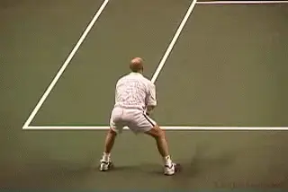
Get the return low and pass on the second ball.
If the volleyer plays the ball off the low return, he must hit the ball up to get it over the net. This is likely to give you a far less difficult ball to hit for the pass. If you feel pressure from the first volley, consider playing another low ball or a short wide ball and see if the next volley gives you the ball you want.
What Direction?
What direction will I hit? Whether the serve is to your forehand or backhand side, know what direction you intend to hit the ball and stick to that decision. Against to [a serve and volleyer, [going down to the feet is the primary target,] [hitting either down the line] or the [cross court angle.]]
Playing baseliners, the direction of your return should be designed to set up your preferred cross court rally pattern.
If you attack the net, then you will tend to hit more returns down the line, although in the ad court you can sometime hit the inside out approach if the ball is near the middle of the service box.
Stay Back or Attack?
Will I stay back or attack off the return? Against big servers, you'll find few opportunities to attack net in first serve situations. But on the easier spin second serves, the chip and charge tactic is very effective at applying pressure to the server.
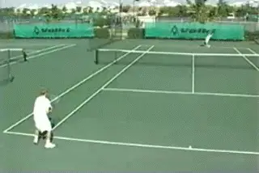
If the server can't hit the location, shift position.
If you want to be successful with the return and volley tactic, you need to know before the serve is in play that you intend to attack. If you wait to see the quality of your return before making your move, you'll often get caught out of position to play the first volley.
Pressure the Serve Selection?
The returner has the ability to apply pressure and influence the server's thought process by becoming more proactive with court position, movement and actions on the return. This can have a real impact on the server's confidence and overall mental game.
One obvious example on the second serve is when the returner moves forward to a starting position inside the baseline. When the server sees this, he may respond in a way that is to your advantage. The server may over hit and try to power through the returner. Or he may become more tentative. Either way, the returner is affecting the thinking of the server and can sometimes illicit a double fault or a weaker return.
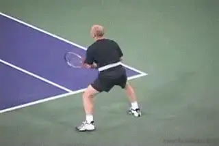
With the right attitude, you'll time the big returns.
This is just one example of the ways the returner can influence the server. A second is starting position from left to right. Typically, your normal starting position for the return will be halfway between the most extreme serve placements either wide or down the T. We call this position \"neutral\" because you favor no one particular side and leave no major openings to attack. But as the match progresses and you begin to see the server neglecting specific serve targets, you should adjust your court position to facilitate attack.
If the server is constantly working the backhand side, then shift over a step or two towards the backhand side. This will improve your wide reach for the backhand attack. It may give you the chance to get around more balls on second serve. You are also challenging the server to go for the target you leave open on the forehand side. This again can affect him mentally and result in missed serves as he struggles to force the ball into the opening.
When you're up against a server with the capability of hitting all the serve targets and effectively disguising these placements, sometimes you just have to become more patient to get an edge. I often talked to Andre Agassi about this. I'd tell him, don't worry about that big serve. You may miss a few returns. But don't show the server that you're emotionally upset. Make up your mind: \"I'm going to get the next one.\" Eventually, if you have that attitude, you'll connect on a few and that's all you need.
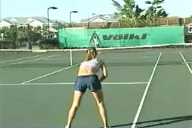
Bait and switch, create and opening and take it away.
Bait and Switch
The bait and switch tactic involves using your court position to create openings for the server, then taking the opening away before the server makes contact.
As the server steps up to the baseline, he'll usually look down to watch the bounce of the ball. Then he'll look up to check the returner's position. The server will expect to see you in your normal starting position. If you change this position, a red flag goes up, and the server sees a possible opening to attack.
If you adjust your starting position to the left, for example, you are baiting him to serve to your right side. When you change your starting position by moving in much closer to the service line, you challenge the server to overpower you. And when you move much further back from your normal neutral position, you challenge the server to go for the extreme angle placements.
Once the server sees you have changed position, you have baited the trap. There is a good chance the server will try to exploit this opening and/or teach you a lesson. That's where the switch comes in. The moment the server's eyes look up again to watch the toss, you can move back to your normal neutral position, with a good idea of where the serve is going. You're now in your normal return position no matter where the serve is placed. Used sparingly, the bait and switch will work effectively, so try it when you need it the most.
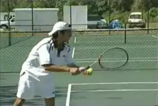
When the player looks up, make your move.
[[A similar point applies if you are looking to run around your backhand and hit an inside forehand return, wait until the server's eyes look up with the toss before you make your move.] [Once the server's looking up, they are more focused on executing the serve and are unable to see you make your move.]]
Your court position depth can also be used as one of the most effective tools to break down the serve and volley attack. If you always return from the same depth in the court, the serve and volleyer can more easily establish his movement pattern and timing for the split step and first volley. If you vary the depth of your position on the return by moving forward or back a step or two, that will often be enough to disrupt the server's attack. Rather than thinking you should be altering your strokes, change your position instead and you may find your opponent constantly searching for timing and rhythm.
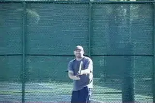
The classic club strategy: \"Blast and Push.\"
Blast and Push
Here is a final aspect to the return game that applies at the club level, Many club players use a serving strategy we call \"Blast and Push.\" They lack the correct grips and motions to serve effectively with spin. So they blast away at the first serve hitting it as hard and flat as possible, usually with a forehand grip. When it doesn't go in--and it usually doesn't--then they push the second serve into play, again hitting little or no spin.
Since this strategy results in such a low first serve percentage, most of the points begin with a second serve. But occasionally these players will get a first serve in that will be difficult to deal with. In those cases, the strategy should be just to neutralize the first serve by chipping or just blocking the ball. The second serve can actually be difficult to deal with because the change in speed is so great compared to the first ball. This is where an inexperienced player can donate a lot of points trying to hit big returns agains \"easy\" serves.
Remember that generating your own pace on the return is actually more difficult than taking it from the serve. You must establish a rhythm and often this means hitting the serve back at something close to the pace at which it came to you in order to make the server play. As your rhythm solidifies and your confidence increases, now you can start to hit some approaches off the returns, or increase the pace. But don't turn the push second serve into a weapon for the server by making unforced errors because you think you should be able to blast the ball yourself.
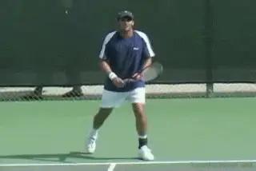
The return: mental, technical, tactical.
[The Big Picture]
So there we have it. We've covered the technique, but we've covered the equally important mental and strategic aspects of the return. One thing is for sure, if you can't break serve, it's very difficult to win matches. Too many players never consider how the returns differ from the groundstrokes or work systematically on developing them. Follow my advice in this article and the two other return on Tennisplayer (link) and you'll have a huge advantage over most of your opponents.

Nick Bollettieri is the legendary coach who invented the concept of the tennis academy more than 30 years ago. He has trained thousands of elite players, including some of the greatest champions in the history of the game, players like Andre Agassi, Tommy Haas, Jim Courier, Monica Seles, Maria Sharapova, and Boris Becker. IMG Bollettieri Academies are located in Bradenton, Florida.